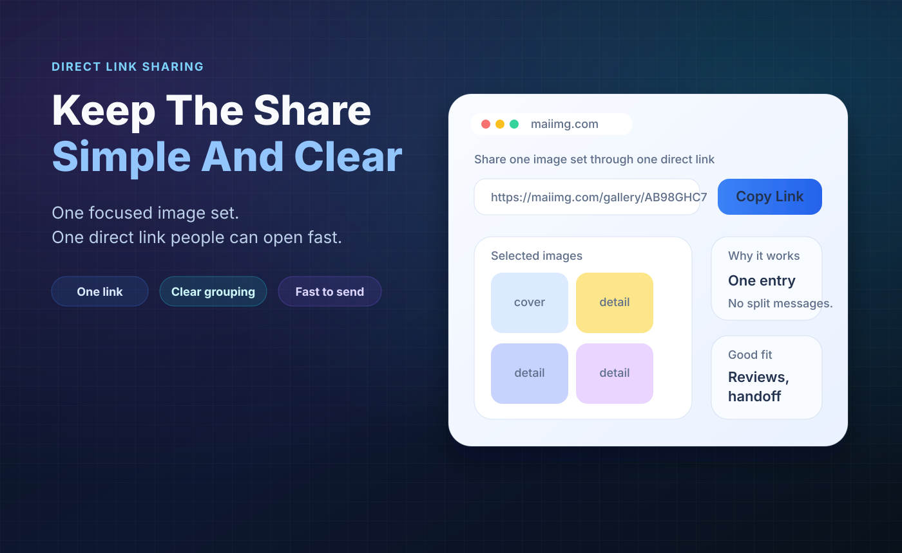

Chat clarity
The chat stays readable
When you send 20 photos directly, the conversation disappears under image tiles. A single album link gives people the photos without turning the chat into a scroll test.

Instead of sending photo after photo into WhatsApp, put the set behind one link and send that once. The chat stays readable, everyone opens the same album, and you can close access later.
Pick up to 25 photos that belong together and put them in one focused share.
Send the album link in WhatsApp instead of sending every image as a separate message.
The same share gives you a QR code for printed cards, tables, posters, or in-person handoff.
Use one focused batch: party highlights, family photos, product shots, class photos, or travel moments.
Generate a direct link and QR code from the same MaiIMG share. The link is what you paste into WhatsApp.
Paste the link into the chat with one short label. If the set is temporary, add expiry before or after sharing.
When you send 20 photos directly, the conversation disappears under image tiles. A single album link gives people the photos without turning the chat into a scroll test.


Write a short label like "Birthday highlights" or "Trip photos from Saturday." People know what they are opening, and the link stays useful when someone finds it later.
If the WhatsApp group is only one channel, use the QR code for posters, cards, or in-person sharing. Both the link and QR point to the same share, so they close together.

Upload a focused photo set, copy the share link, paste it into WhatsApp, and close the album when the moment is over.
Try MaiIMG